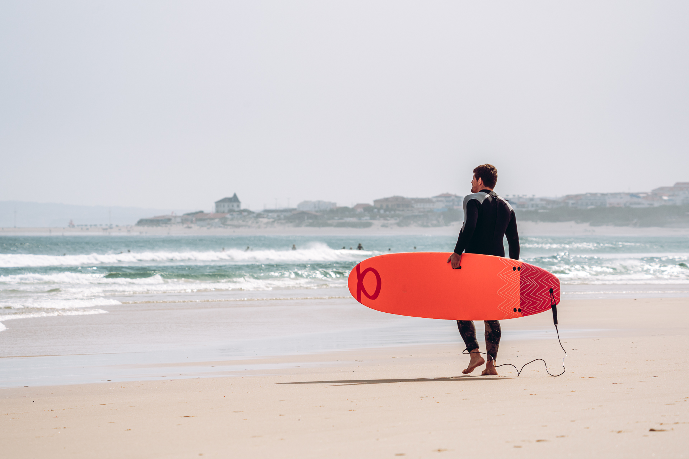

🏄 Surfing
Surfing keeps me grounded. Reading the ocean, waiting for the right set and adapting to changing conditions is a practical exercise in patience and awareness.
Growing up near the Amalfi Coast gave me an early love for the Mediterranean, and wherever I travel, I look for waves.